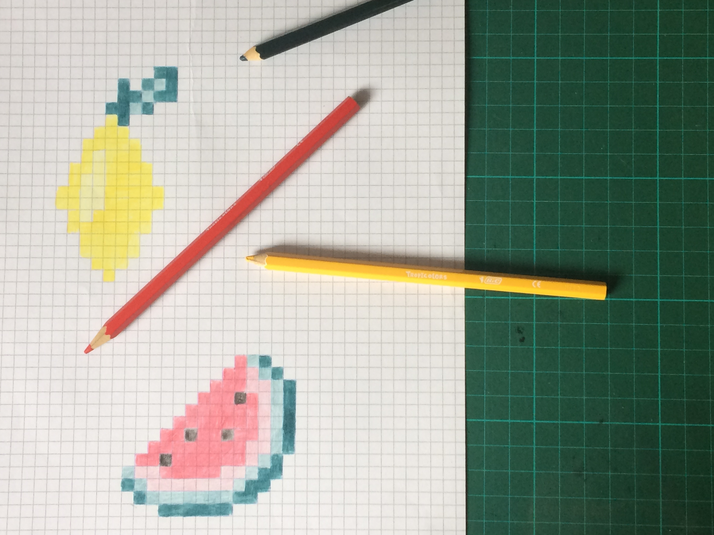
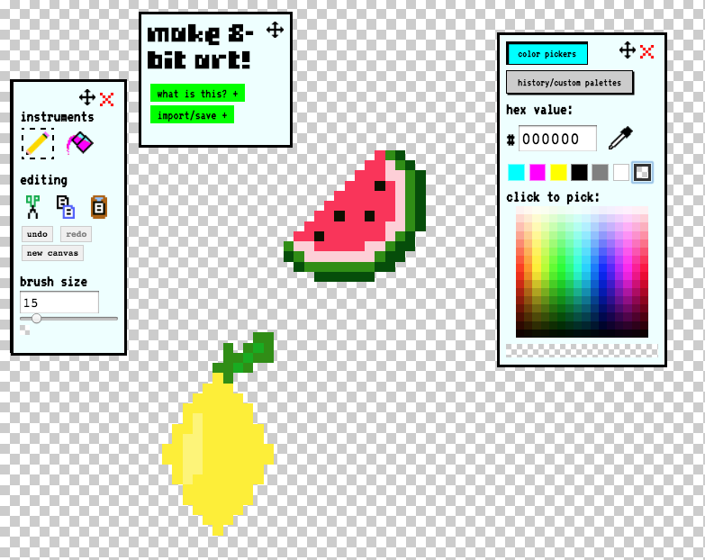
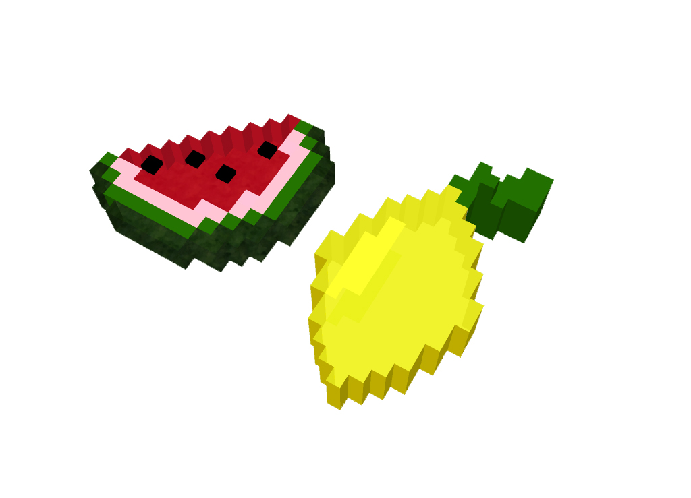

Ingrédients :

Dans un premier temps, vous allez réaliser la base de vos fruits. Pour cela, munissez-vous d'une feuille et de crayons de couleurs. Dessinez ensuite les fruits de votre choix à l'aide des petits carreaux (le Pixel Art n'étant pas facile à réaliser directement sur les logiciels, il est bon de recourir à des méthodes simples pour débuter cette recette).

Une fois vos dessins réalisés sur support papier, ouvrez votre navigateur et dirigez-vous sur "Make8bitart". Ce logiciel offre une large palette de couleurs qui vous permettra de reproduire au mieux vos visuels. Le crayon vous permet de dessiner les pixels, le pot de peinture sert à changer la couleur de votre "toile",l'outil "brush size" à modifier la taille des carreaux. Vous pouvez dès à présent reporter vos dessins sur le logiciel et l'exporter en .png pour passer à l'étape suivante !

A présent, nous allons transformer la texture de vos fruits en gélatine. Pour cela, il vous faudra télécharger le logiciel Blender et importer l'image précédente pour ensuite s'en servir comme modèle pour modélisation.Pour mettre l'image en arrière-plan, il vous faudra cliquer sur "view" et sélectionner "properties", un menu apparaîtra sur la droite de la fenêtre. Sur le bas, il y a une case nommée "background", il vous faudra cocher la case "ad image" puis "not set" et cliquer en dessous sur "open", ici s'ouvrira l'explorateur de Blender, cherchez l'image que vous avez préalablement enregistré, sélectionnez-là et cliquez sur "open image" en haut à droite de l'explorateur. Votre image apparaitra. Dessinez à l'aide du modèle en arrière plan, des outils formes prédéfinies (cubes) ainsi que l'outil d'extrusion.
Il est possible de changer l'opacité pour donnner un rendu gelatineux. Enregistrez !
Si vous n'aimez pas la gelée voici une alternative à la recette principale, le smoothie ! Pour cela importez votre fichier précédent dans le logiciel Inkscape, copier l'image et superposez-là sur elle-même mais de manière légèrement décalée, changez l'opacité (que vous trouverez sur le côté droit de votre fenêtre) allez ensuite vers l'onglet filtre, distortion et cliquez sur tourbillon, mixez !